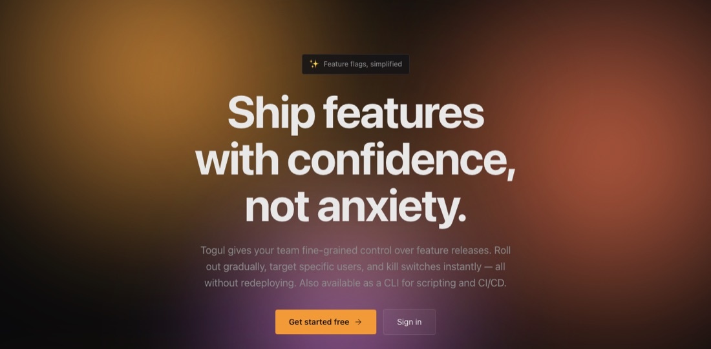
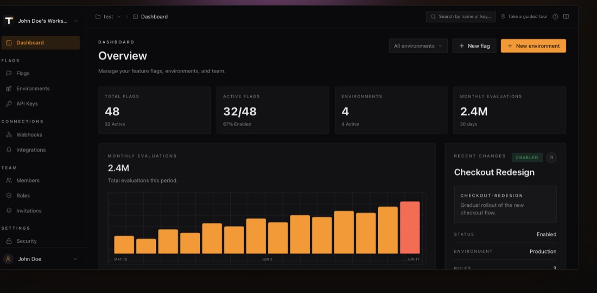
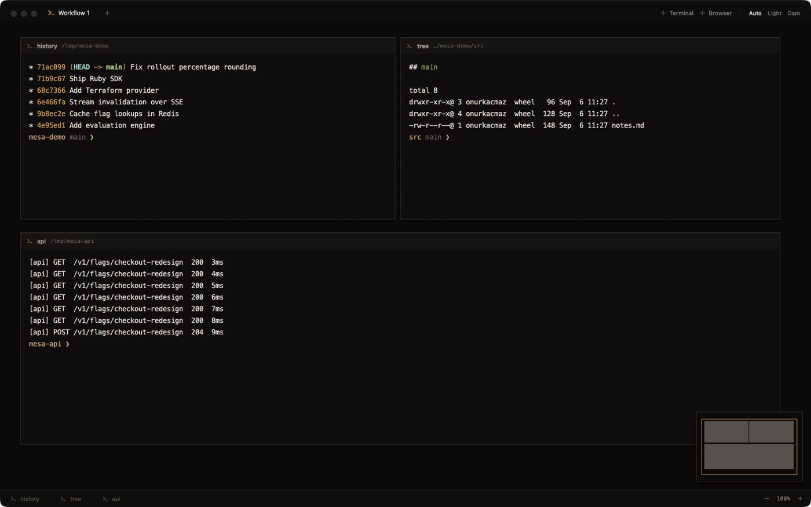
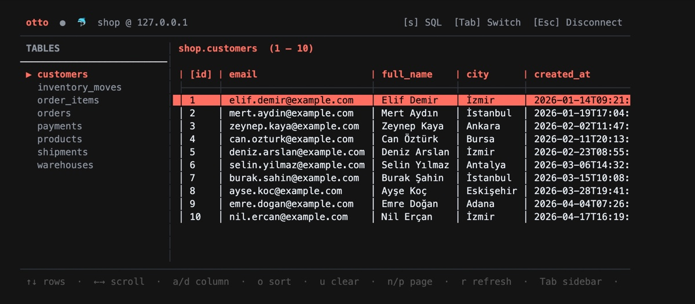
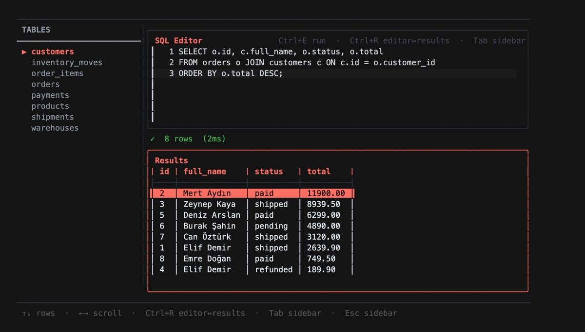
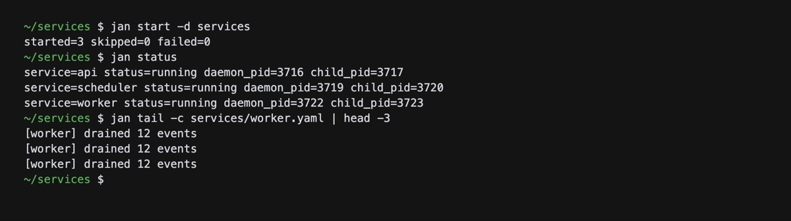

Onur Kaçmaz
I build backend systems. Core team at HotelRunner, on event driven microservices and embedded finance for travel. On the side I build Togul and developer tools in Go.
Projects
-
A feature flag and remote config service, built as an alternative to LaunchDarkly and Unleash. I build all of it: the API, the dashboard, the SDKs and the infrastructure.


- Go API on Fiber with a pure flag evaluation engine, multi-tenancy, audit logging and billing through Stripe and LemonSqueezy.
- SSE fan-out pushes cache invalidation to connected SDKs, so flipping a flag reaches production without a redeploy.
- Five official SDKs — Go, JavaScript/Next.js, PHP, Laravel and Ruby — all built against one OpenAPI contract.
- Next.js dashboard, a Terraform provider for managing flags as code, and a CLI for scripting and CI/CD.
- Runs on Kubernetes with PostgreSQL, Redis and MongoDB, with infrastructure kept in its own repo and its own pipeline.
-
A desktop app where every shell has a place instead of a tab. Drag terminals anywhere on an unbounded surface, zoom out to see the whole workspace, zoom back in to work, and find everything where you left it tomorrow.

- A tabbed terminal makes you remember which tab is which. Mesa gives every session a position you can navigate spatially.
- Browser panes sit on the same canvas, so the thing you are building and the page you are checking it on are side by side rather than behind each other.
- Electron and React on top, node-pty driving the real shells underneath.
- Ships as a .dmg for Apple Silicon, MIT licensed.
-
A database console that lives in the terminal. Connect, browse tables and run SQL without leaving the shell.


- Persistent sidebar with live table search, and a split SQL editor that keeps the query and its results visible at the same time.
- Table viewer with pagination, horizontal scrolling and column sorting.
- Connection history, so a database you used yesterday is one keystroke away.
- Written in Go on Charm's BubbleTea, installable through Homebrew.
-
A small process supervisor. Start services as daemons, stop them, check their status and tail their logs, all from one YAML file.

- Daemonized start, stop, restart and status, driven by a single config file or a whole config directory at once.
- Restart policies with retry limits and backoff, configurable log paths and built-in log tailing.
- A single static binary, installed with one curl line.
Experience
-
A travel and hospitality technology platform. I work in the core team, in İzmir, since March 2024.
- Develop multiple microservices on an event driven architecture.
- Developer of an embedded finance infrastructure built specifically for the global travel industry.
- Work across the core domain, where changes reach every product on the platform.
-
Product and software house in İstanbul. 2 years 3 months, from January 2022 to March 2024.
- Backend developer on a SuperApp, bringing several services together under one product.
- Built logistics systems and paid entertainment platforms.
-
ADT İnternet ve Bilişim Teknolojileri Tic. Ltd. Şti., in Samsun. 3 years 5 months, from September 2018 to January 2022. My longest run so far.
- Worked with message queuing and microservices.
- Developed e-commerce, stock management and marketplace applications with the team.
-
Back end developer in Samsun, June to September 2018. A 4 month stint, and my first full time backend role after graduating.
-
Software intern in Samsun, June to August 2012. 3 months, during high school, and where the whole thing started.
Stack
- Languages
- Frameworks
- Databases
- Version control
About
I am a software developer based in İzmir, Türkiye. Over the years I have worked on e-commerce, CRM, logistics, superapp, finance, travel and paid entertainment systems.
The through line is the backend: queues, services that talk to each other, and money and inventory that have to stay correct. I like the part of a system where a mistake is expensive, which is probably why I keep ending up in core teams.
Studied Internet and Network Technologies at Süleyman Demirel Üniversitesi, after Computer Technologies at Sema - Cengiz Büberci Mesleki ve Teknik Anadolu Lisesi. Certified on Cisco IT Essentials and Cisco Discovery 1, 2 and 3.
I work in Turkish and English.
Let's chat
If you are building something on the backend and think I would be useful, or you just want to talk about PHP, Go or distributed systems, my inbox is open. I answer every message.